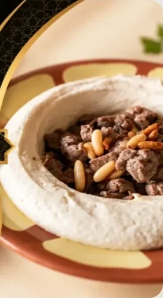

Straight from the Middle East
A Mediterranean grill and hookah bar in the heart of Richardson, Texas.

Good food, warm service and a place to linger
Sultan Café is a Mediterranean grill and hookah bar on S Greenville Ave, right in the heart of Richardson. We're dedicated to two things: excellent service and food worth coming back for.
If you're searching for the best hummus, gyros and tabouli in town, you've found it. Our menu comes straight from the Middle East, with Turkish specialties, Halab spices and recipes that taste like home.
Every plate has a story
The spices behind our favorite dishes, from across the Middle East and beyond.
Turkish spices
A special mix that gives our char-grilled lamb chops their depth.
Halab spices
Aleppo's signature blend, worked into our ground beef kufta.
Indian spices
Warm and fragrant, for chicken breast grilled with our sauce.
Sumac
Bright and tangy, paired with onion for our tender lamb chunks.
Excellent service
Every guest is welcomed like family, whether you're stopping in for a sandwich or staying all night.
Authentic flavor
Recipes and spices straight from the Middle East, grilled fresh to order.
Made for gathering
Family platters, a relaxed hookah lounge and late hours, so the night never has to end early.
Join the team
We're hiring. If you love great food and great hospitality, we'd like to meet you.